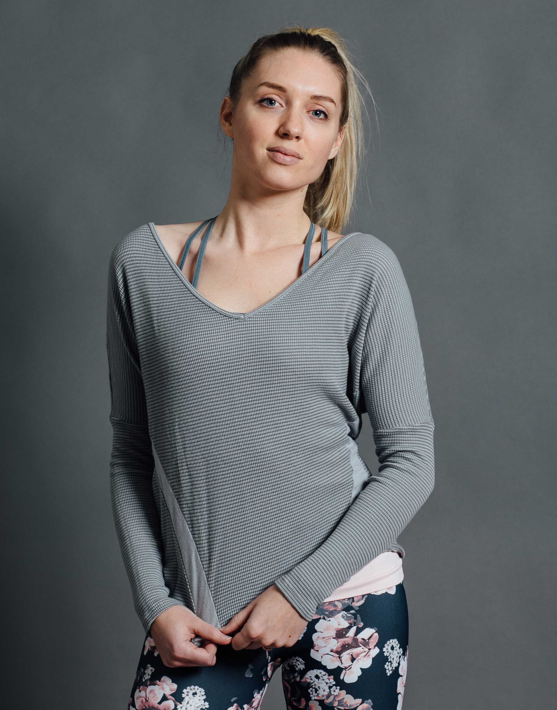
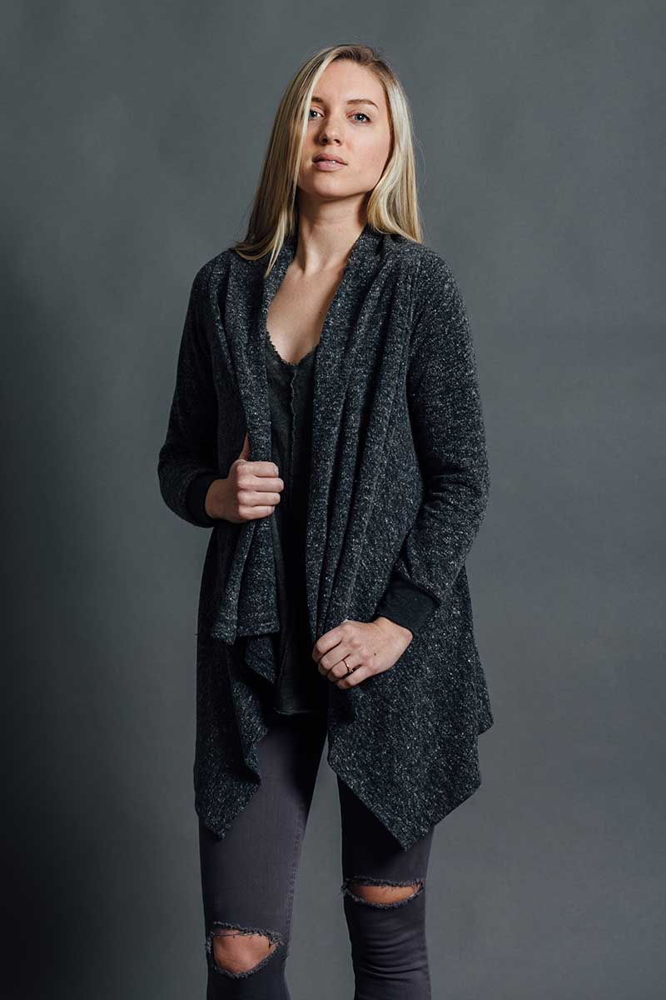
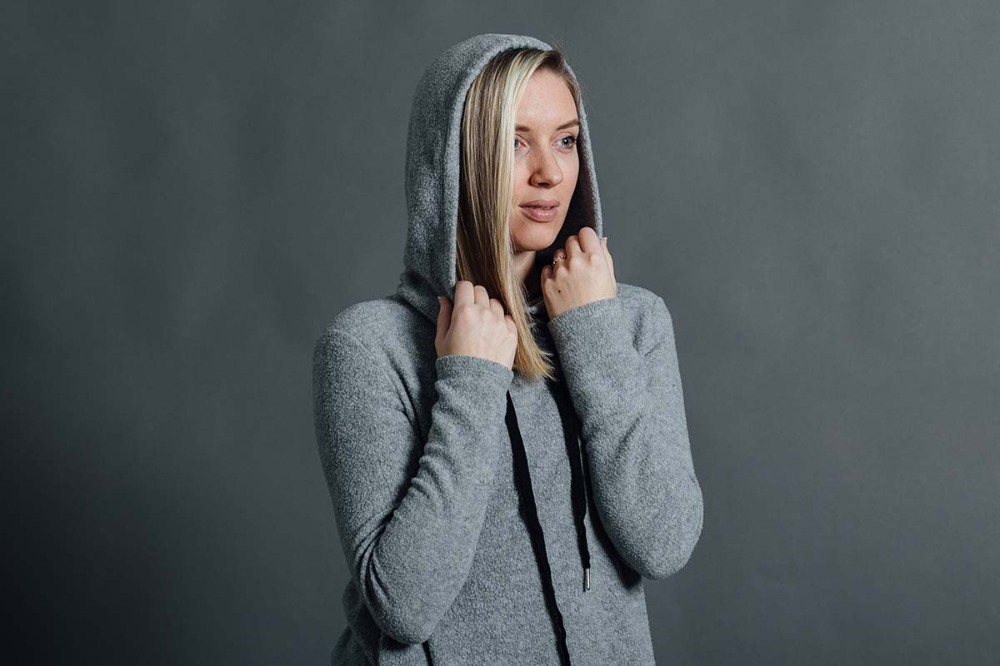
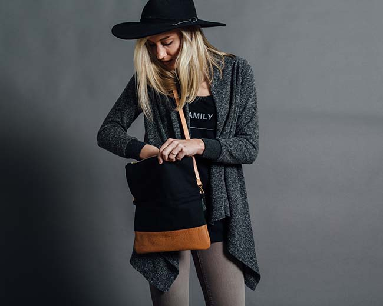
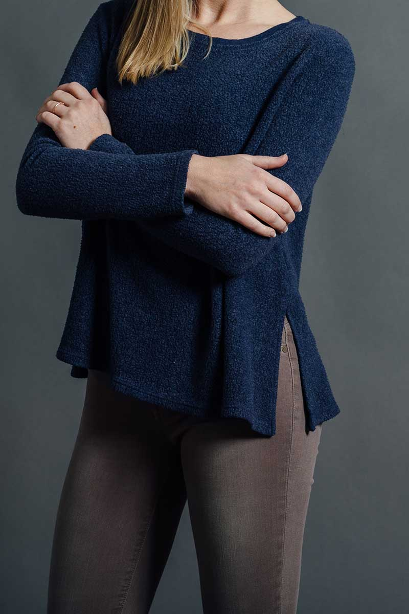
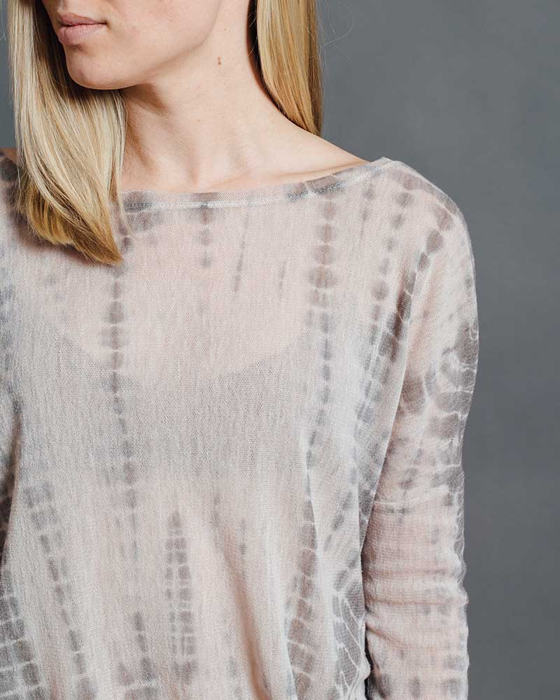

Get some of our favorite looks from our January 2016 shoot, showing off our everyday style perfect for the boss bey who is constantly on the go, and needs to be as comfortable as much as she is stylish.
Our favorite tops from NUX USA are the perfect post-workout layers, but pair just as perfectly with your fave distressed skinny jeans.
Inspire Tee
Cozy Cardigan
We love the Camper Hoodie, the perfect cozy hoodie in an oh-so-flattering silhouette featuring side slits to show of a little sassiness.
Campr Hoodie
Umbrella Collective Foldover Clutch
 (6 of 13).jpg)
NUX USA + Maptote gear
Project Social T makes some of our favorite tees: we love the Stevie Mesh shirt and the Cabin Fever Sweatshirt.
Cabin Fever
Stevie Mesh Tee
Copyright 2016, Candice Stewart.